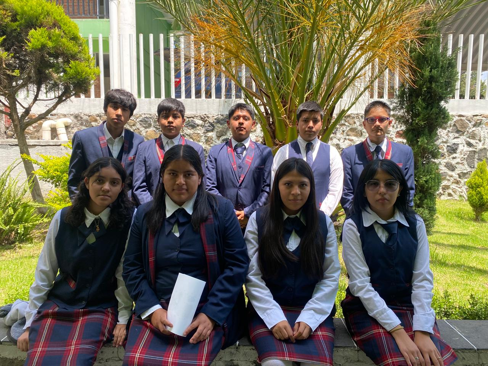

¡BIENVENIDOS A DOCENCIA!

NORMAL DE ATLACOMULCO
INFORMACION
Mision:Capacitar a futuros docentes con exelencia, perspectiva de genero, inclucion e innovacion educativa
Vision:Ampliar modalidades, fortalecer investigacion, infraestructura, transparencia y reconocimiento nacional e internacional
La escuela normal de atlacomulco ofrece diversos programas educativos, orientados a la formacion de docentes
Licenciaturas en educacion secundaria ofrece las especialidades en:
Español
Ingles
Historia
Ciencias naturales
Matematicas
Ciencias sociales
Filosofia
Educacion fisica
Licenciatura en educacion primaria
Lincenciatura en pedagogia con especialidades en:
Psicologia educativa
Ciencias sociales
Ciencias naturales
Matematicas
Maestria en intervencion docente
Doctorado en pedagogia
Mapa curricular
Duracion: 8 semestres
Creditos:Aproximadamente 392 en total
Practicas:Observacion docente durante los primeros 6 semetres (6 h/sem) y practica intesiva al fial (10h/sem frente a grupo)
Actividades
Horarios:
Clases de: 7:00 a 15:00h, con talleres (coros, bandas, danza) los miercoles y jueves de 16:00 a 18:00
Centro de computo:7:00-18:00h
Controol escolar:8:00-17:00
NORMAL DE SAN FELIPE
INFORMACION
Mision:Formar profecionales de la educacion con exelencia academica y compromiso social, capaces de innovar frente a los retos del conocimiento.
VisionSer una institucion de educacion superior que destaca por la formacion integral de docentes, con reconocimiento nacional e internaciona,
promoviendo TIC, rendicion de cuentas y mejora continua.
Objetivo estratejico:Desarrollo profecional del personal, consolidacion de cuerpos academicos, acreditaciones, conveniocs de movilidad y certificacion.
Oferta academica
Licenciatua en Educacion Primaria
Licenciatura en Enseñanza y Aprendizaje de las matematicas
Licenciatura en Educacion Preescolae Intercultural, Plurilingue y Comunitaria
Mapa curricular
Estructura:55 cursos distrubuidos en 5 trayectos formativos, mas trabajo de titulacion; total de 291 creditos
Trayecto formativo
Psicopedagojico (16 cursos, 4h/sem)
Formacion para la enseñanza y aprendizaje (20 cursos, 6h/sem)
Lengua adicional y TIC
Optativos (4 cursos)
Pracicas profecionales (8 cursos: formacion continua y practicas intensivas de 20h/sem en 8° semestres)
Actividades
Horarios
Lunes a viernes, de 7:00 a 18:00 horas
Horariosespecificos por departamento:
Biblioteca:9:00-16:00
Centro de computo:7:00-17:00
Areas administrativas, financiera, investigacion, formacion inicial, control escolar, desarrollo docente:7:00-17:00